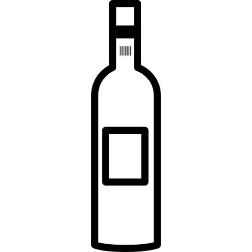

Viñapeña Tempranillo
-  Vinho tinto
- Espanha - Multirregional
- Tempranillo


Nossos vinhos são guardados com todo o cuidado que eles merecem: longe da luz direta, em ambientes com temperatura controlada e livre de vibrações. Essa atenção garante que cada garrafa preserve seus aromas e sabores originais até chegar à sua mesa.

Não sabe qual vinho escolher? Veja nossas sugestões: